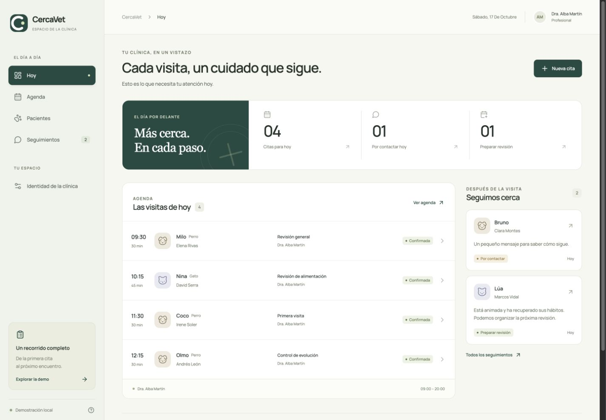

Tu jornada, a la vista.
Consulta las citas y los seguimientos pendientes desde un mismo panel. Encuentra qué necesita atención hoy.
PARA CLÍNICAS VETERINARIAS
Conecta las citas, las notas de cada visita y el seguimiento hasta la próxima revisión. En un espacio que lleva el nombre de tu clínica.
Demo gratuita · Sin registro · Contactos simulados
Privacidad y uso de la demo

MÁS CONTINUIDAD, MENOS CABOS SUELTOS
Una visita no termina al cerrar la consulta. CercaVet ayuda a mantener el contexto cuando toca volver a contactar o preparar una revisión.
Cerca, en
cada cuidado.
Consulta las citas y los seguimientos pendientes desde un mismo panel. Encuentra qué necesita atención hoy.
Relaciona la visita, las indicaciones y la evolución comunicada por su familia. Retoma cada caso sin empezar de cero.
Registra el seguimiento y prepara una nueva cita vinculada a la consulta anterior. El recorrido conserva su continuidad.
UN PACIENTE. UN RECORRIDO COMPLETO.
Pruébalo con Milo en la demo: desde su primera visita hasta una nueva reserva.
Reserva un horario, identifica al paciente y deja registrado el motivo.
Guarda las notas de consulta y acuerda cuándo revisar su evolución.
Prepara un mensaje y registra la respuesta de su familia. En la demo, el contacto es simulado.
Crea una cita enlazada al seguimiento y a la consulta anterior.
MARCA BLANCA
CercaVet es la base. La identidad que verá tu equipo será la de tu clínica.
Vista ilustrativa. En la demo también puedes subir tu logo. Estos cambios no se guardan.
EMPIEZA POR PROBAR EL RECORRIDO
La demo permite explorar la experiencia. La implantación real se define según los procesos y las herramientas de cada clínica.
Datos ficticios, guardados solo en tu navegador. Sin registro ni envío real de mensajes.
Estas funciones requieren desarrollo y configuración. Se acuerdan antes de utilizar datos reales.
ANTES DE PROBAR
Sí. En «Identidad de la clínica» puedes cambiar el nombre, subir un logo PNG, JPG o WebP y elegir una paleta. Si no subes un logo, la clínica personalizada muestra sus iniciales.
No. Puedes explorar la demo con los pacientes de ejemplo. Los cambios quedan en ese navegador y no se comparten con otras personas o dispositivos.
No. Puedes preparar el mensaje y registrar un contacto de prueba y su respuesta. El envío real y las automatizaciones forman parte de una futura implantación.
Primero revisamos cómo trabaja la clínica. CercaVet puede servir como base para un flujo específico de atención; la integración, la migración o la sustitución de herramientas necesitan un alcance acordado.
Según el alcance de la adaptación: equipo, datos, integraciones y soporte. La demo es gratuita y no implica contratar ningún servicio.
CERCA, EN CADA CUIDADO.
Abre una cita, completa la consulta y descubre cómo continúa el seguimiento.